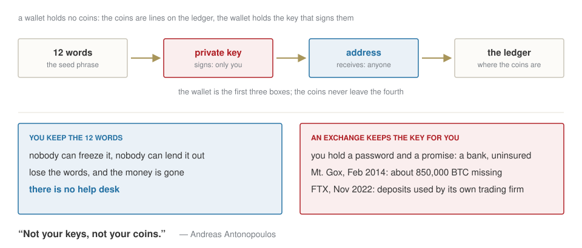
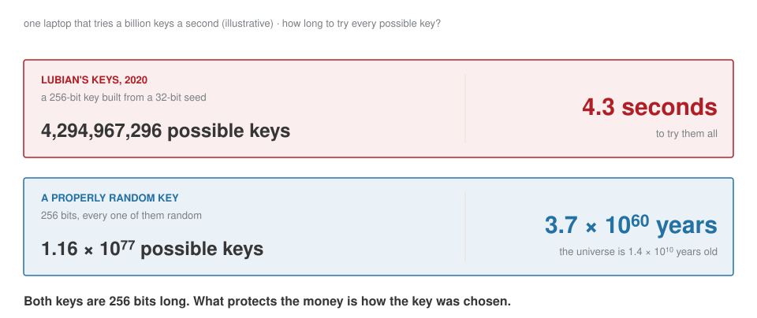
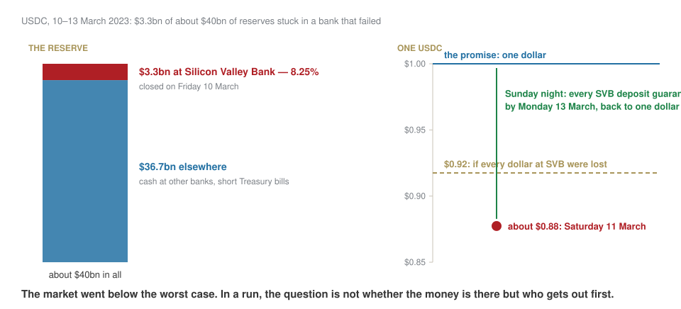
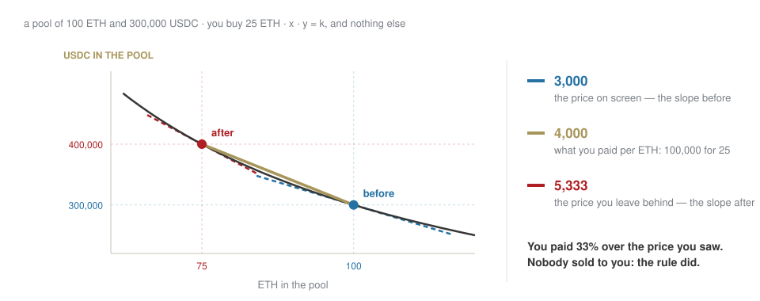

Crypto is a ledger. A ledger is data.
Week 6 · Wednesday 18 November 2026 · 10:00–13:00
AI for Business and FinTech · European School of Economics, Florence
Where we are
| 1–5 | 23 Sep – 4 Nov | a model’s release · tokens · look first · read first · agents and harnesses ✓ |
| Mid + 6 | today | the oral · crypto from the ledger up · the capstone |
| 7 | Thu 19 Nov · 15:00 | AI that reads |
| 8 | Wed 25 Nov | AI that looks at the data |
| 9 | Thu 26 Nov · 15:00 | AI that acts |
| 10 | Wed 2 Dec | capstone studio |
| Rev. | Wed 9 Dec | final presentation |
From today the course turns to crypto. Not to explain it to you again: to find, concept by concept, where AI earns its place in it.
Last session, in one slide
An agent is a loop: the model asks, your code decides. The harness is the loop with a chassis: tools, permissions, a rules file, subagents, MCP, hooks, a transcript.
Every tool is a door, and every door opens both ways: whatever a tool returns is text in the context, next to your instructions.
A rule in the prompt is a request. A permission or a hook is a law.
The undo button: a file change can be reverted. A message sent, a payment made, a row deleted cannot. The irreversible actions get the laws.
Today
| 10:00 | the oral: eight minutes, the live check, one question per session |
| 10:40 | the midterm, what it taught us |
| 10:55 | your MCP case, in two minutes |
| 11:10 | break |
| 11:25 | crypto from the ledger up, and where AI comes in at every step |
| 12:10 | the capstone: one verb, one tool, the test written first |
| 12:50 | three ideas for Wednesday · three lines |
The oral
Eight minutes. Your note, from your laptop, as at a morning meeting.
The live check, five minutes. I add to your notebook a document you have not seen and ask one question; you check the citation in front of me.
The oral, fifteen minutes. One question for each of sessions 1–4, from the list in the brief.
Each answer is evidence for the row of the marking grid its topic belongs to.
Every line you submitted, you can explain. That is the whole rule, and it is the same one for the capstone.
Crypto is a ledger. A ledger is data.
Every idea in the next forty-five minutes is a way of keeping one shared page honest without a bank. Every page is also something an AI can read, look at, or act on.
Part 1 Crypto from the ledger up
Start with a page among friends
▶ 3Blue1Brown, But how does bitcoin actually work? (2017): the first ten minutes are this page.
Where could AI come in?
A page that everyone can read, with every payment ever made and no names on it, is the largest public financial dataset there is.
Nobody reads it line by line. A machine can: flows between exchanges, a wallet that wakes up after ten years, a pattern that looks like a theft in progress.
Session 8: the AI that looks at the data.
Who keeps the page?
No bank keeps it. Everyone keeps a copy. That leaves two problems:
- which copy is the true one?
- what stops someone rewriting a line from last year?
The answer to both is a fingerprint: a short code computed from the text. Same text, same code; one letter changed, a different code.
Bet
Four blocks in a row, each carrying the fingerprint of the one before. You change one character in block 2. How many blocks turn red?
Each block carries the fingerprint of the one before
Try to rewrite history
LIVE · andersbrownworth.com/blockchain · ten minutes · you drive
- Hash. Type your name. Change one letter. Delete it all: the empty page has a fingerprint too.
- Block. Press Mine and watch the nonce count up until the fingerprint starts with four zeros.
- Blockchain. Change a line in block 2. Count the red blocks. Re-mine them, one at a time.
- Distributed. Three copies, one of them changed. Which one do you believe, and why?
Where could AI come in?
Not here. The chain is arithmetic: it needs no judgement, so it needs no AI. AI comes in around it: whoever reads the page, and whoever writes to it.
A wallet holds no coins. It holds a key.

Where could AI come in?
Give an agent the key and it can pay: at three in the morning, a thousand times a day, to anyone. A signed payment has no undo, and nobody to call.
Session 9: the AI that acts, and the limits it acts within. Last session’s undo button, with money.
The $14 billion key
28 December 2020. In about two hours, some 127,000 bitcoin, worth $3.5bn at the time, leave the wallets of LuBian, a Chinese mining pool. Nobody reports a theft. The coins sit there, in public, for years.
August 2025. Arkham, a blockchain analytics firm, points the world at them.
October 2025. The US Department of Justice files to seize 127,271 BTC, about $14bn, from Chen Zhi, head of Cambodia’s Prince Group, accused of running scam compounds. Beijing says Washington hacked the wallets.
Who owns a bitcoin? Whoever holds the key. Today that is the US government. How it got the key has not been made public.
Same length, a different key
The flaw, found by researchers who study broken wallets: LuBian’s keys were 256 bits long, but built from a 32-bit seed. A short random number, stretched into a long key.

Ask a model for a random number
LAB · ChatGPT and Claude · 5 minutes
Five temporary chats in ChatGPT and five in Claude, so neither remembers its last answer. The same prompt each time:
Give me a random number between 1 and 10. Please only return the number with no additional text.
Write the ten answers on the board. A fair ten-sided die says 7 one time in ten.
What the model wrote
A study sent exactly this prompt 75,600 times: six models, among them GPT-4o-mini (a ChatGPT model) and Gemini 2.0, in seven languages, at six temperatures. Claude was not one of them: your Claude column is new data.
Between 1 and 10, 7 was every model’s favourite. GPT-4o-mini, Gemini 2.0 and Phi-4 answered 7 about 80% of the time. No model, at any temperature, came close to a fair die.
A model writes the likely answer: the one it read most often after that question (session 2). A key is a random number. A key a model wrote is a key someone can guess, the LuBian flaw in a new form.
▶ J. Coronado-Blázquez, The psychology of LLMs as random number generators, arXiv 2502.19965 (2025)
Where could AI come in?
To look. Arkham, the firm that flagged the LuBian coins in 2025, describes its engine as AI that ties addresses to owners from transaction patterns, timing and where the money came from; a human team checks what it finds. Session 8.
Not to choose the key. An agent can ask a wallet to sign (session 9). The key comes from the wallet’s own random generator, never from a model.
The coins sat on the public page for four years. A machine that looks at every wallet for one pattern, emptied in two hours, never reported, would not have needed four.
A stablecoin is a promise with a reserve behind it
One USDC is worth one dollar because Circle says it holds one dollar for every coin, in bank deposits and short Treasury bills, and publishes the reserve every month.
The reserve earns interest. The coin holder gets none of it: the issuer keeps it, and shares it. Coinbase says it captured about half of all USDC economics over the past year (Q2 deck, slide 13): that is inside your midterm’s subscription and services line.
Bet
Friday 10 March 2023. Circle says that $3.3bn of its $40bn reserve sits in Silicon Valley Bank, which failed that morning. What is one USDC worth on Saturday? Write a price.
What the arithmetic said, and what the market did

Where could AI come in?
Read the reserve report every month: which banks, which bills, what changed since last month (session 7).
Look at the peg and at the redemptions, every minute, for the first sign that people are heading for the door (session 8).
A promise is a document, and a run is a pattern in data. The two verbs of the next two sessions, on one coin.
No one on the other side
On an exchange you buy from a seller. On a DEX there is no seller: a pool holds two tokens, and one rule sets the price.
x \cdot y = k
Take ETH out, put USDC in: the product must not change, and that alone fixes what you pay.
Bet
The pool holds 100 ETH and 300,000 USDC, so the screen says 3,000 per ETH. You buy 25 ETH. What do you pay per ETH, on average?
Three prices, one curve

An agent that trades through a pool must know the price it will pay, not the price on screen. And every swap is a public line on the page: session 8 can count them.
A loan with no banker
No credit score, no income, no meeting. You lock collateral worth more than the loan, and a program watches the price.
You lock $10,000 of ETH and borrow $7,000 of USDC. The protocol liquidates when your debt passes 80% of what the collateral is worth.
Bet
How far can the price of ETH fall before the code sells your collateral? A percentage.
The collateral is the credit check

Where could AI come in? Watching ten thousand loans at once for the ones near the line (looks), or topping up your collateral before the line is crossed (acts), within a limit somebody set.
Where does the yield come from?
| the yield is… | who pays it | it lasts while… |
|---|---|---|
| interest | a borrower, like you on the last slide | someone wants to borrow |
| fees | a trader, on every swap through the pool | someone wants to trade |
| a token the protocol prints | the next person who deposits | new money keeps coming in |
Where could AI come in? Read the white paper for the sentence that says who pays (session 7); look at whether the fees cover the yield (session 8).
The box
April 2022, Bloomberg’s Odd Lots podcast. Sam Bankman-Fried describes the third kind of yield: a box that does nothing, a token for voting on the box, and a yield paid in that token. People put money in, the token rises, more people put money in.
Matt Levine, on the same call, says it sounds like the Ponzi business. Seven months later FTX was bankrupt.
If you cannot say who pays the yield, assume it is you.
Every page is something an AI can read, look at, or act on
| the intuition | where AI comes in | session | |
|---|---|---|---|
| the ledger | one public page, no names | look at every payment: flows, patterns, thefts | 8 |
| the documents | a white paper, a vote, an audit, a reserve report | read them, cite the page, find the missing promise | 7 |
| the key | whoever signs pays, with no undo | act, within limits a person set | 9 |
| the stablecoin | a promise with a reserve | read the report, watch the peg | 7 · 8 |
| the pool and the loan | prices and liquidations by rule | watch flows and loans; trade within limits | 8 · 9 |
| the yield | somebody pays it | find who | 7 · 8 |
Two questions before any project: does it need a blockchain? Does it need AI?
Most projects that say blockchain need a database, and most that say AI need a rule. Your capstone has to survive both questions.
Part 2 The capstone
It is the midterm again, but you choose the question
Pick one real decision in finance or crypto that somebody takes every week. Build, with the tools of this course, an AI tool that helps take it.
Write the test before you build. Run it, put it next to a rival that does no work, price it, and say what you would not let it do. Then defend it for fifteen minutes.
No code: a notebook, ChatGPT or Claude, a sheet, an agent you configure.
The midterm was Coinbase’s question and Coinbase’s documents. This time the question is yours, and so is the tool. The full brief.
One capstone, one verb

Four questions every idea must pass
- Can you open the source today? The documents or the data in your hands, not promised.
- Can you write ten questions or cases with the answers found by hand? If you cannot, you cannot test it.
- Does it fit in two weeks? A narrow tool, well tested, beats a broad one nobody checked.
- Is it still interesting if the answer is no, it does not work? If a failed test makes the project worthless, it was a bet, not a question.
Three ideas. Which survive?
Bet
- An AI that tells me which coins will go up next month.
- A checker that reads five token white papers and says, page by page, whether each contains what MiCA requires.
- An agent that moves my savings between DeFi pools to chase the best yield.
Run each through the four questions. Which survive?
Only the second. The first cannot be checked by hand before it happens, and “no” is the expected answer. The third is not two weeks, and the course has one rule it breaks: no real money.
The steps
| step | by | what you do |
|---|---|---|
| 1. Three ideas | Wed 25 Nov | three ideas through the four questions; one is chosen in class |
| 2. The plan | Thu 26 Nov | one page: decision, user, source, test, rival, main risk, steps |
| 3. The test, first | Sat 28 Nov | ten questions or cases answered by hand, three traps, the tab dated |
| 4. The tool | Mon 30 Nov | built; the model card written down |
| 5. The draft | Tue 1 Dec | the tool, the test run once, the memo’s headings; reviewed on 2 Dec |
| 6. Run, price, write | Sun 6 Dec | the final run, every miss named, the cost, the memo, rehearsed |
What you hand in, and how it is marked
By Sunday 6 December, 23:59: a memo of about 2,000 words on Turnitin; the tool, the test sheet and the cost in your Drive folder. Wednesday 9 December: fifteen minutes, with the tool live.
| weight | criterion | what earns it |
|---|---|---|
| 15% | framing | a real decision, a named user, a cost of being wrong |
| 25% | evidence | the test written first, a rival, every miss named |
| 20% | the artefact | a tool someone else can open and run |
| 20% | risk and governance | controls that are laws, not requests; MiCA and the AI Act |
| 20% | communication | within length, within time, honest about what failed |
Close
For Wednesday 25 November: three ideas, one paragraph each, each through the four questions. We keep one.
Three lines at the bottom of your sheet: one on what a ledger is, one on where a yield comes from, one on the idea you would bet on today.
Next: Thursday 19 November, 15:00. AI that reads: white papers, votes, audits, and MiCA.
AI for Business & FinTech · ESE Florence